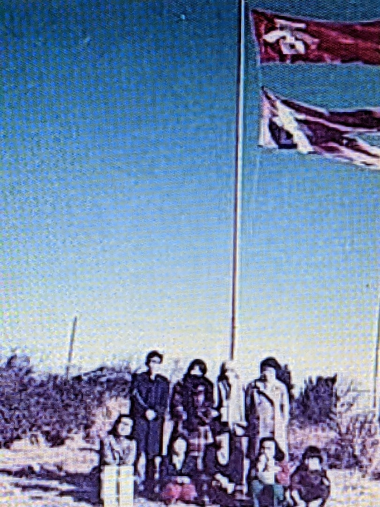
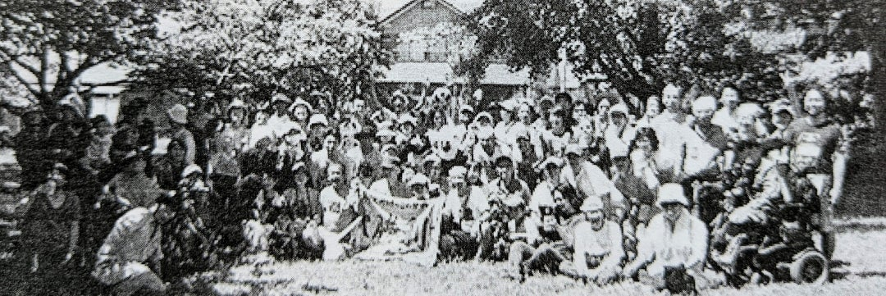

Anti-Base Movements in Military City
Ameblo · · Original page / 元ページ ·
Anti-Base Movements in the Military City of Tachikawa
Significance of the Year 1972
The year of 1972 should be remembered as one of the years of crucial importance in Japan’s post-war history, especially for those who are concerned about peace issues in Eastern Asia and committed to anti-base movements.
Fifty years ago, Japan’s Self Defense Force (SDF) moved an air squadron onto the former US Base in Tachikawa in early March while the residents were asleep. Eeven the city mayor was uninformed.
On May 15, the administrative rights over Okinawa, or Ryukyu Islands, which was under the US occupation from 1950 to 1972, was returned to Japan. Under the leadership of Prime Minister SATO Eisaku, ABE Shinzo’s uncle, “reversion without nuclear weapons, on par with the mainland (kakunuki, hondonami)” was a popular term widely propagated. That was one of the major factors which brought Sato the Nobel Peace Prize two years later.
But in fact, the majority of the US Bases in Okinawa remained as they were even after 1972 and the existence of secret agreements about the use of the base were suspected even before 1972. The apparent violation of Japan’s non-nuclear principles was finally revealed by WAKAIZUMI Kei, Sato’s secret emissary to Washington during the Johnson and Nixon administrations, in his memoir published in 1994.
Wakaizumi felt not only sorry for the people of Okinawa but also guilty, and committed suicide two years later as he was depressed by people’s general apathy and by the fact that his exposé did not spark any change in Japan’s politics or the Japan-US relationship.
His name has now been mostly forgotten; and even the topic of Okinawa in relation to its memorial reversion and the facts behind the scenes seems to be carefully avoided in mass media.
Fifty years ago, as was mentioned several times in our articles of this blog, 23 protestors of Sunagawa Toso were arrested in September, almost two months after the relevant incidents. Consequently 7 of them were prosecuted on a charge of violating the Special Criminal Act Attendant upon the Enforcement of the Administrative Agreement based on the Article 3 of the Japan-US Security Treaty.
Here is an English abstract below, which summarizes a blog of July 10, 2022, about the citizens resistance for more than fifty years. It might be helpful to read it to consider whether the above-mentioned incidents of 1972 just happened individually or there existed some suggestive links among them.
Resistance of “Association NO” and
Tent Village for Monitoring SDF
KATO Katsuko, an activist of Tachikawa deeply involved in resistance and peace movements in 1970s, recalls that there was some information about SDF coming to Tachikawa around 1970. Groups of citizens were formed one after another in the newly developed housing complex and together voiced their opposition to the move. As unity built within the groups, they organized Association “NO” to Refuse Military Base and Refuse SDF. When they initiated a study meeting, they invited MIYAOKA Masao, sub-captain of Sunagawa Action Corps, to be the first lecturer for them.
Even after SDF clandestinely moved in between midnight of March 7 and dawn of March 8, 1972, they remained active and, with the support and careful arrangement of Miyaoka, set up an eight-meter-high anti-war banner in a corner of a field owned by a farmer and member of the Sunagawa Anti-Base Alliance.

{kind=link}
initial members of Association"NO"
Association “NO” was actually an antecedent of the Tent Village, a group of activists and their camp whose name was inspired by the tents, or huts, that they constructed and used, for monitoring SDF on a regular basis.
As they worked out various tactics in conjunction with other anti-base movements, non-sectarian students and anti-Vietnam activists joined in. One of the actions they came up with was the demilitarizing broadcasting that made direct appeals to Self-defense officials. They also constructed a tower to propagate anti-war slogans in front of the main gate of the SDF base.
Those actions constantly came under anonymous attacks, which might be attributable to, or even inevitable in, a military town. A hut used for the anti-military broadcast station was burnt down in a suspicious fire and the one-square-meter anti-war tower was damaged or painted black several times.
After the broadcast station was burned, they used a vehicle as a mobile station to revive their anti-war broadcast in front of the main gate. Every time the anti-war tower was damaged, they repaired it and made them bigger and stronger. But at midnight in the fall of 1977, shortly before the day of ceremonial reversion of the US air base, the heavy tower was totally destroyed and disappeared.
After all, SDF has stayed over the “3-year tentative use” period, and under the name of Tachikawa Wide Area Disaster Prevention Base, the SDF camp has been strengthened. As a result, citizens’ resistance has been prolonged as well.
Since October, 1982, training flights of C-1 transport aircraft were conducted every month. In April 1983, a C-1 crashed into a mountain on an island in Mie Prefecture, called Sugashima, and all four members of the crew were killed. The plane was allegedly flying at an altitude of 180 meters in a heavy fog, violating the aviation law which prohibits a flight below 300 meters.
On July 18 of the same year, representatives of Sunagawa Anti-base Alliance and the Tent Village, jointly filed an application for a provisional disposition order to the district court of Hachioji.
Ever since, a small monthly demonstration to voice opposition to the flight of C-1 aircrafts has continued along with other actions to maintain the anti-war icons of the military town and to keep monitoring the SDF.
In the minds of Kato and her local fellows, SDF’s transfer to the former US base offered a negative example to other military towns including Okinawa. They refused SDF and yet were not able to prevent its move. That is why they have been fighting not only for their local concerns but also against militarism in a wider perspective, stressing the necessity to collaborate with Okinawa and the importance of continuity.

Another stage of Sunagawa Toso at present： photo taken in May 2014, on a day of anti-war rellay race starting from Sunagawa and running around the existing base of SDF .
{kind=link}
Anti-Base Movements in Military City. 2022年8月2日. 砂川平和ひろば公開記事アーカイブ. https://sunagawa-heiwa-archive.github.io/articles/ameblo-12756400904.html. Original: https://ameblo.jp/2021fukuoka-ameba/entry-12756400904.html